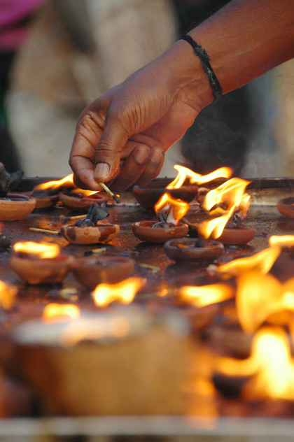
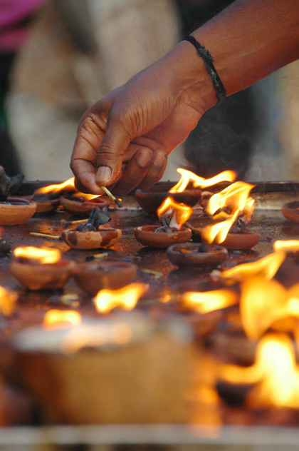

Für die letzte Etappe mussten wir mal wieder nach Chennai. Für den heutigen Kurzaufenthalt haben wir uns in einem anderen Teil der Stadt, in Mylapore, eingemietet. Hier mussten wir das etwas düstere Bild der Stadt komplett revidieren. Unser Hotel liegt direkt an einem großen Hindu-Tempel. Die Straßen rundherum sind voll mit Obst- und Gemüseständen, sowie Ständen, die Gebetszubehör (hauptsächlich Blumen) verkaufen. Die Rikschas hupen ununterbrochen und die Straßen sind voll mit Menschen. Hier bekommt man Bilderbuchindien.
Da viele Geschäfte wegen der Staatsfeiertage geschlossen haben, sind wir zu einer großen Shopping-Mall gefahren, um unsere Rupien wieder zu echtem Geld zu machen. Ein indisches Einkaufszentrum ist ein tolles Erlebnis. Wir haben uns auf jeder Etage erneut verirrt. Aber das charakteristische Chaos wird hier durch Festpreise und bekannte Marken seltsam mit dem Westen vermischt.
Auf dem Rückweg haben wir perfekt die Stoßzeit in unserem Tempel abgepasst. Die Leute kommen durch die Tore in allen Himmelsrichtungen hineingeströmt und geben sich den verschiedensten, frommen Tätigkeiten hin. In einer Ecke wird gesungen, in der nächsten Kerzen angezündet, in der nächsten wieder Blumen verteilt. Die Gesänge hallen durch das ganze Gelände und werden vom Abendlicht untermalt, das die bunten Kühe, Pfauen, Kobras und Menschen beleuchtet, die die vielen kleinen Dächer zieren. Leider ist die Hauptkuppel momentan eingerüstet, so dass wir mit den Neben-Kuppeln Vorlieb nehmen mussten.
 

Mit dem Feuerwerk, das wohl eher zu Ehren Indiens gerade abgefeuert wird, fühlen wir uns würdig verabschiedet.